Henrri.com — refonte de la page d'accueil
Une semaine, en distanciel, pour rendre la proposition de valeur d'un logiciel de facturation plus lisible.

Contexte et cadrage du stage
Afin de bénéficier d'une expérience plus approfondie dans le domaine de l'UX-UI, j'ai effectué des recherches sur les personnes en freelance actuellement dans ce domaine, et j'ai contacté Marine DELOUHANS par mail afin de savoir si mon projet de réaliser un stage l'intéresserait.
À la suite de plusieurs échanges par mail et par téléphone, nous avons pu convenir d'une semaine de stage à effectuer à distance en réalisant 2 exercices :
- Reproduire la page d'accueil de Airbnb en utilisant l'inspecteur pour avoir exactement les mêmes espacements et mise en page.
- Faire l'analyse du site de facturation Henrri ainsi que sa refonte visuelle.
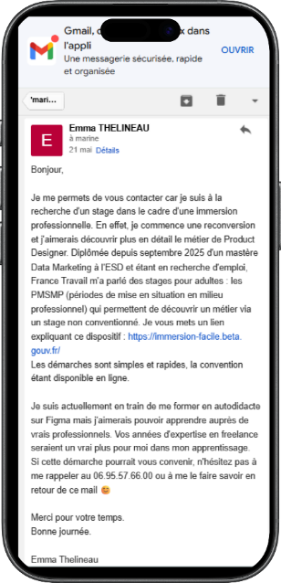
Étape 1 : Analyse de l'identité visuelle existante
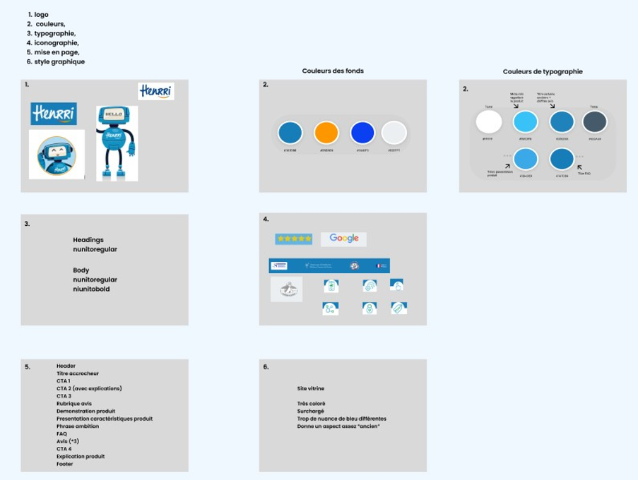
J'ai commencé ma réflexion par l'analyse de l'identité visuelle existante en regardant le logo, les couleurs, la typographie, l'iconographie, la mise en page et le style graphique.
J'en ai conclu que les couleurs étaient attrayantes ce qui donnait envie de rester sur le site. A l'arrivée sur le site le bleu en tant que couleur de fond attirait l'œil de l'utilisateur. Selon moi, un des éléments à améliorer était notamment le contenu général car trop important. Pour avoir un meilleur taux de visite sur la page, il faudrait avoir toutes les informations importantes au-dessus de la ligne de flottaison.
La homepage est relativement longue, ce qui doit engendrer un taux de scroll plutôt faible. Enfin il y avait selon moi la possibilité d'améliorer les visuels pour donner un design plus moderne au site, notamment en changeant simplement les cards par des bords ronds.
- Aider les TPE et PME gratuitement
- L'entraide
- Être accessible à tous (gratuité)
- N'avoir aucune limite
- Ton neutre (sauf si le robot parle, plus amical)
Analyse concurrentielle
Après avoir analyser l'aspect visuel du site j'ai réalisé une analyse concurrentiel direct.
| Esthétique | Prix | Clarté du produit vendu | Nbre CTA | Contenu | Classement | |
|---|---|---|---|---|---|---|
| Henrri | Vieux, pas interactif | Gratuit | Oui | 4 | Très chargé | 5 |
| Indy | Épuré et lumineux | Gratuit pour la facturation, gamme compta | Oui | 3 | Pas trop long | 1 |
| Abby | Épuré et lumineux | Plusieurs offres | Oui | 2 | Taille parfaite pour du contenu | 2 |
| Zervant | Aéré | Gratuit | Non | 2 | Trop succinct | 6 |
| Mistral | Brouillon | Ne sais pas | Non | 0 | Trop peu d'informations | 9 |
| Pennylane | Aéré et lumineux | Plusieurs offres | Oui | 5 | Taille parfaite pour du contenu | 3 |
| Tiime | Clair, coloré, aéré | Pas totalement gratuit (compte pro) | Oui | 7 | Trop de contenu (surtout FAQ) | 4 |
| Qonto | Moderne | Non | Bof | 3 | Trop de contenu (surtout FAQ) | 7 |
| Stripe | Moderne | ??? | Bof | 3 | Trop de contenu | 8 |
Voici ma synthèse :
Le site Henrri présente une identité visuelle globalement attractive, avec des couleurs engageantes et un fond bleu qui capte efficacement l'attention de l'utilisateur dès l'arrivée. Cependant, malgré cet aspect positif, l'expérience utilisateur est freinée par un contenu trop chargé. La homepage, relativement longue, peut limiter le taux de scroll et donc la découverte des informations clés. Une simplification et une hiérarchisation plus claire du contenu permettraient de mieux guider l'utilisateur.
Le positionnement du produit (gratuité, aide aux TPE/PME, accessibilité totale) est pertinent et fort. Il gagnerait toutefois à être davantage mis en avant de manière immédiate et concise. Le site manque de modernité dans ses éléments visuels. Une évolution vers un design plus actuel (cartes plus aérées, bords arrondis, meilleure hiérarchie visuelle) améliorerait la perception globale.
Il est impératif de mettre en avant la facturation electronique disponible car la plupart des concurrents le mentionne explicitement à l'aide de visuels. Le ton neutre du produit est cohérent avec la cible mais pourrait être légèrement plus chaleureux pour renforcer l'engagement. En conclusion, Henrri dispose de bases solides mais doit optimiser la clarté, la concision et la modernité de son interface. Ces améliorations permettraient d'augmenter l'engagement utilisateur et la compréhension rapide de la proposition de valeur.
Etape 2 : refonte de l'identité visuelle
Avant de passer à la refonte de l'identité visuelle je me suis posé plusieurs questions :
- Doit-on moderniser le logo ? NON
- Faut-il revoir la palette de couleurs ? OUI
- Une nouvelle typographie est-elle nécessaire ? OUI
- L'iconographie doit-elle être retravaillée ? OUI
- Création des nouveaux éléments graphiques OUI
Suite à ça j'ai décidé de réaliser un moodboard. J'ai utilisé Dribble, Pexels ou encore Behance pour chercher mes inspirations.
Ce qui pour moi devait ressortir du moodboard était les mots :
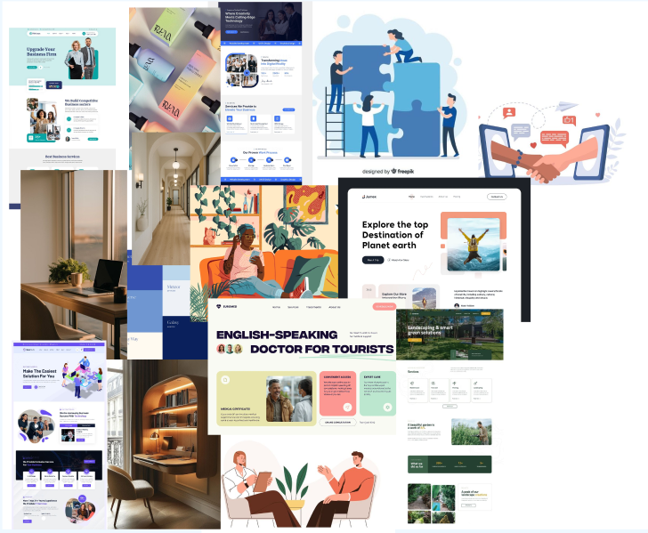
Initialement, je souhaitais m'orienter vers ce genre de palettes de couleurs
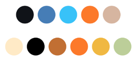
Le design initiale de la marque
On peut constater qu'il y a beaucoup d'informations, la facturation électronique n'est que très peu mise en avant et il y a des informations coupées sous la ligne de flottaison.
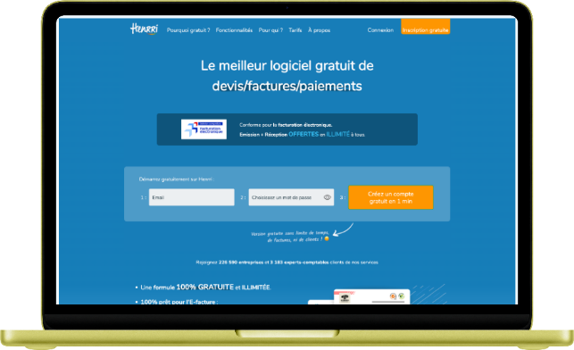
Comme on peut le constater sur la maquette ci-dessous, il y a beaucoup d'informations sur les cartes de "features" concernant la solution et notamment vers la fin du site web. Afin de rendre l'expérience utilisateur sur le site plus agréable, j'ai fait le choix de réduire des sections qui pourront être redéplacées dans d'autres onglets spécifiques du site.
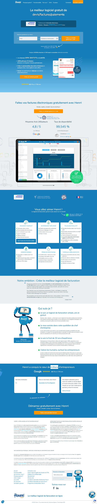
Refonte du hero
La facturation électronique étant un point essentiel de ce que peut offrir le logiciel Henrri, j'ai fait le choix de le mettre en avant sur la page, pour que les clients puissent voir sans scroller leur écran, l'information dont ils ont besoin.
Avec ce nouveau visuel on peut constater que maintenant les deux pages ont été synthétisées pour ne faire plus qu'un contenu clair.
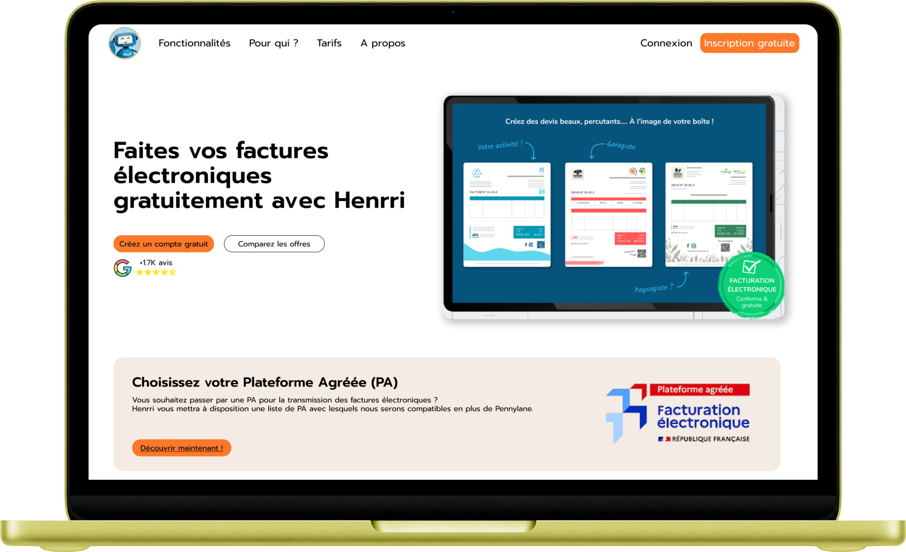
Il est possible de constater qu'on a un titre qui permet de savoir en une seule lecture ce que propose le logiciel accompagné de 2 CTA qui invitent à l'action l'utilisateur. On retrouve ensuite un visuel de ce que propose le logiciel Henrri ainsi qu'une grande bannière qui met en avant la facturation électronique, obligatoire dès septembre 2026.
Refonte des cartes de fonctionnalités
L'écran qui présente les différentes fonctionnalités du logiciel est un point intéressant mais il y a beaucoup d'informations dans chaque carte, ce qui peut perdre l'utilisateur. On peut constater qu'il y a en moyenne 5 à 6 puces par carte alors que la norme UX-UI est de 2 à 4 puces.
En naviguant sur le site j'ai pu aussi constater que certains mots renvoyaient sur des liens cliquables mais ils n'étaient pas mis en avant donc le consommateur ne peut pas savoir qu'il y a des redirections.
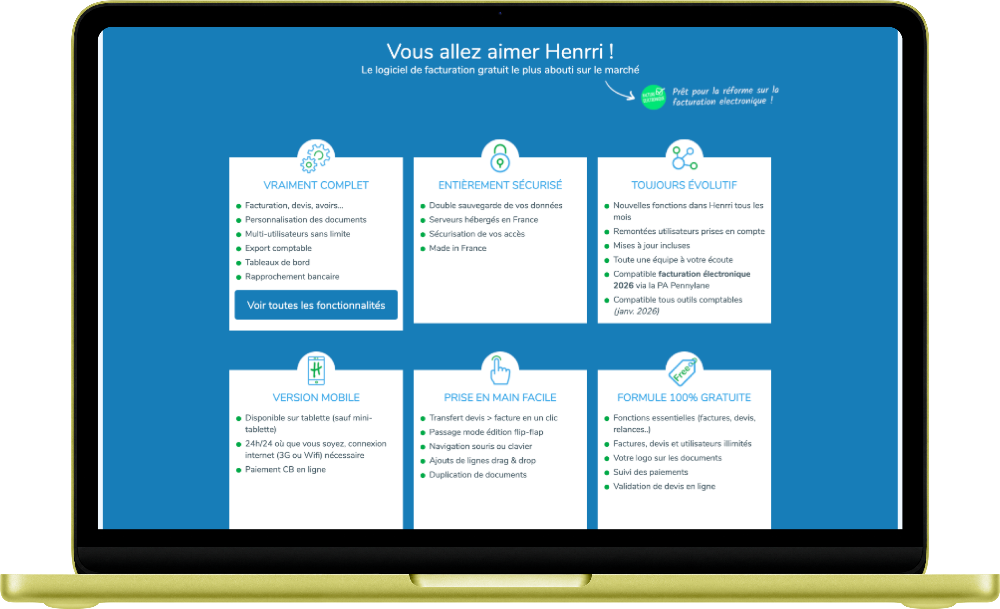
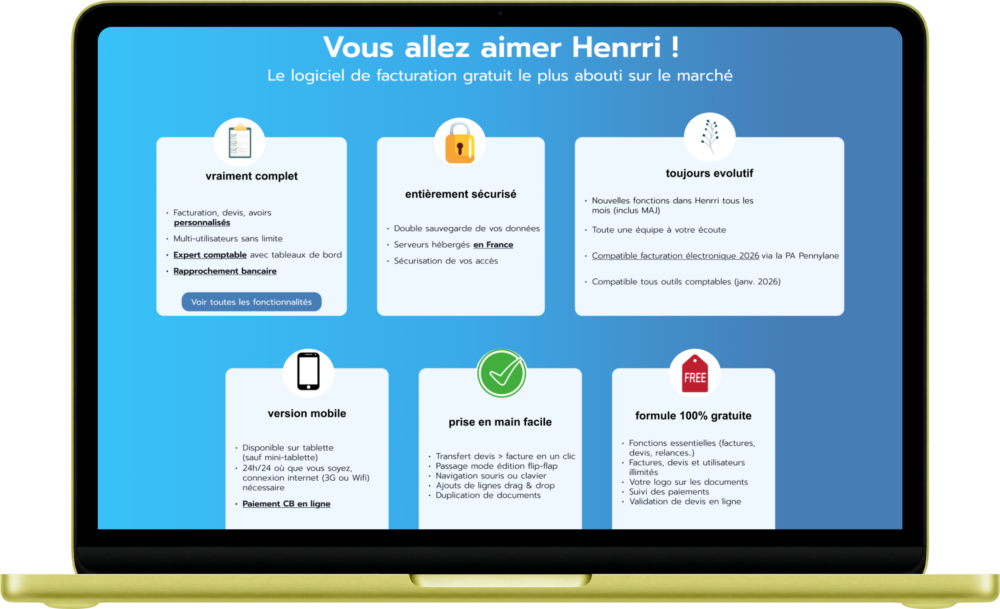
Sur cette nouvelle version j'ai fait le choix de réduire les puces en les regroupant par mot clé afin d'en obtenir 4 en moyenne par carte.
J'ai fait le choix de souligner tous les contenus qui renvoyaient vers des liens d'autres pages du site internet.
Les titres de section ont été mis en minuscule afin de faciliter la lecture de tous les utilisateurs.
Pour finir j'ai remplacé les images par des pictogramme plus moderne et coloré.
Refonte de la section « Qui suis-je »
Pour cette section j'ai enlevé la partie sur les ambitions de l'entreprise car elle est relativement longue, avec une police petite.
Cela n'apporte pas forcément de plus-value à l'utilisateur qui est sur le site car la partie se trouve en bas de la page du site web. Les données de scroll montrent une diminution progressive de la visibilité à mesure que l'on descend dans la page : environ 50 % des utilisateurs atteignent 1 500 px sur les pages de contenu.
J'ai fait le choix de ne pas modifier le contenu écrit par Henrri mais par contre de redesigner les cartes afin d'avoir une lecture plus fluide.
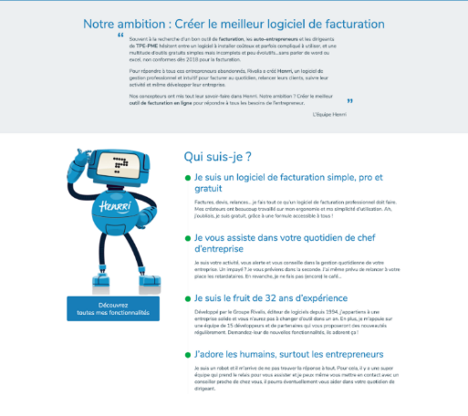
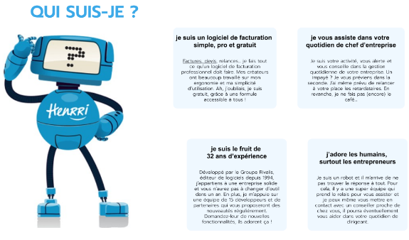
Refonte des avis et du footer
L'ancien visuel montre une section de commentaires assez sommaire. On retrouve aussi une zone de texte très importante et le footer.
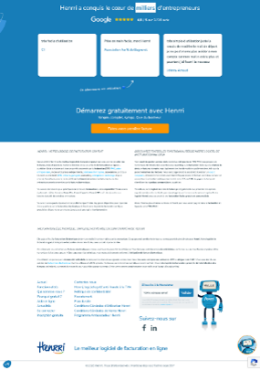
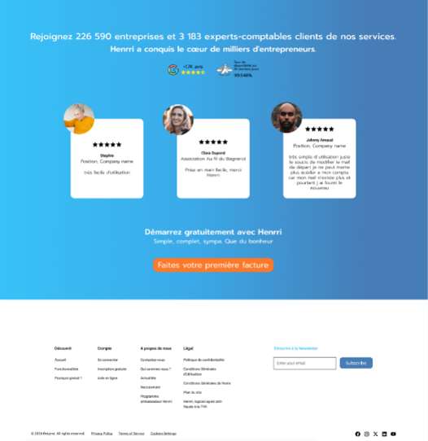
Pour rendre ce visuel plus moderne j'ai décidé de réutiliser un gradient de bleu ainsi que les informations que l'on retrouvait sur la homepage concernant le « rejoignez nous […] » et les chiffres des avis Google ainsi que le taux de disponibilités. Replacer ces informations ici avait pour moi plus de sens afin de rendre encore plus crédible la zone des commentaires. Le CTA a été aussi légèrement modifié par sa couleur et par ces bords plus arrondis.
J'ai fait le choix de supprimer toute la zone de texte que l'utilisateur ne prend jamais le temps de lire, car trop conséquente et placée trop bas sur la homepage.
Aperçu avant/après de la maquette complète
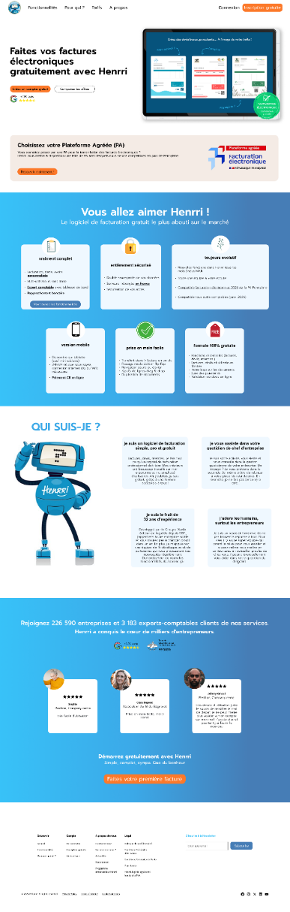
Deux versions finales
J'ai fait le choix de proposer 2 versions différentes concernant la refonte du site Henrri afin d'apporter une version qui se rapproche en termes de direction artistique des couleurs du site original, et ensuite pour proposer une seconde version différente avec mes propres idées.
Pour cette 2e version j'ai cherché à mettre en avant le côté humain que j'avais ressenti comme valeur à la lecture du site web.
J'ai choisi la couleur jaune car en UX elle représente notamment l'énergie et le dynamisme. Comme pour la version numéro une j'ai fait le choix de regrouper toutes les informations essentielles sur la homepage au-dessus de la ligne de flottaison. On y retrouve un texte qui permet de savoir la fonctionnalité du logiciel ainsi qu'un CTA pour souscrire et la mise en avant de la facturation électronique.
La structure du site reste la même que la version numéro une en étant plus épurée que la version originale.
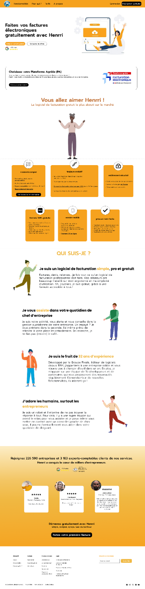
Les touches de couleur jaune permettent de mettre en avant les différents CTA ainsi que les 6 onglets de fonctionnalité et des mots clés qui vont permettre cibler qui est Henrri.
Comme énoncé précédemment j'ai décidé de mettre plusieurs personnages pour avoir ce côté plus « humain » que l'on retrouve sur le site web initial mais qui n'est montré malheureusement que par le petit robot.
Ouverte aux opportunités en région parisienne comme à distance.